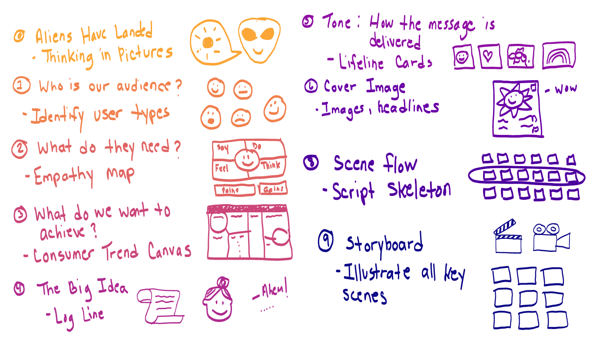

Workshops
Design Sprints
I am really excited to start sharing my journey into workshopping and will be expanding this section over the next month.
A few months before COVID, I learned how to run Design Sprints from AJ&Smart. As soon as I aligned my innovation process with this Sprint framework, my projects immediately gained a new momentum. Each sprint produced a high fidelity tested prototype (or live demonstrator with real data) that we could then break down into a project plan and backlog.
Designing products can be messy and I have found workshops to be a great way to bring structure, enjoyment and momentum to the process. I run various workshops such as Design Sprints, Strategy Sprints, Product Feature Workshops, Product Strategy Workshops, Ideation Sessions, Story Sprints and many more.
Exercises
I really like how the Design Sprint can be run iteratively, and even modified to fit the particular need. I don’t always need to run an entire sprint and sometimes I might just work with specific exercises and customize it.

Building custom workshops to solve problems and make decisions.
I ended up creating variations of the Design Sprint for other types of work, for example a Storytelling Sprint where a team goes through a series of steps in order to create an engaging story.
Team Building
Have a look at a workshop that I have designed for a Team Building Retreat